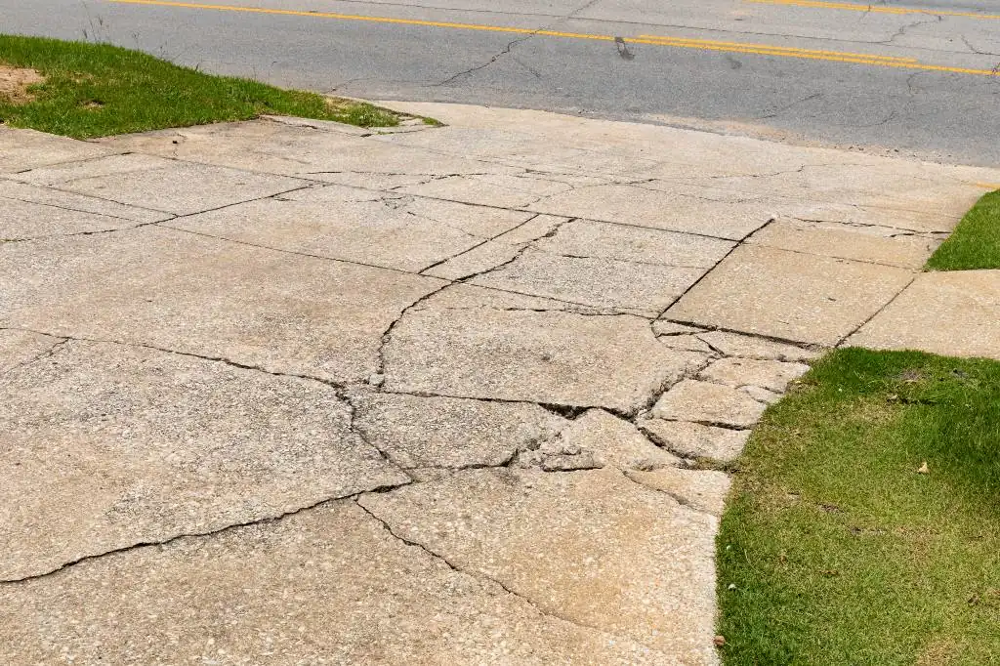
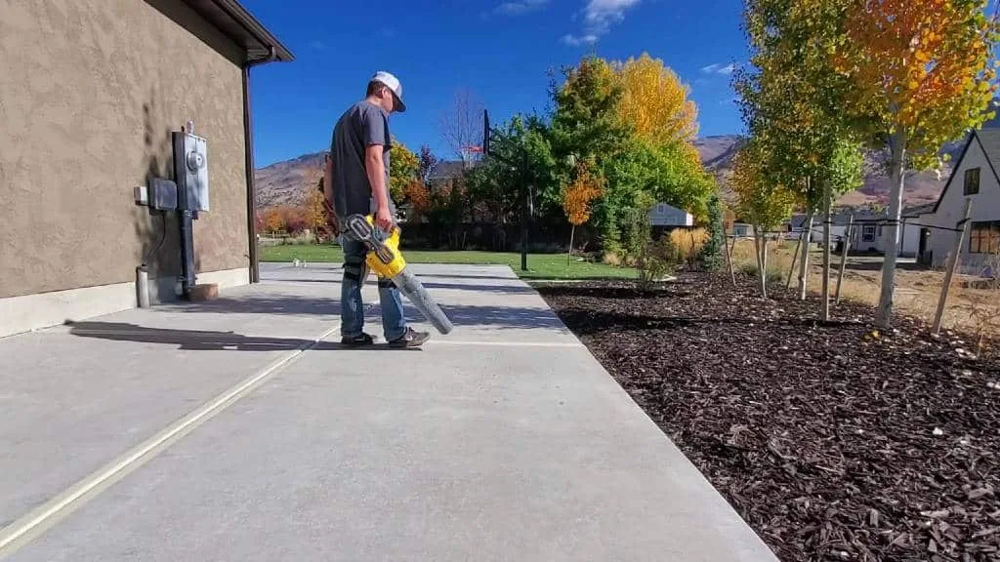
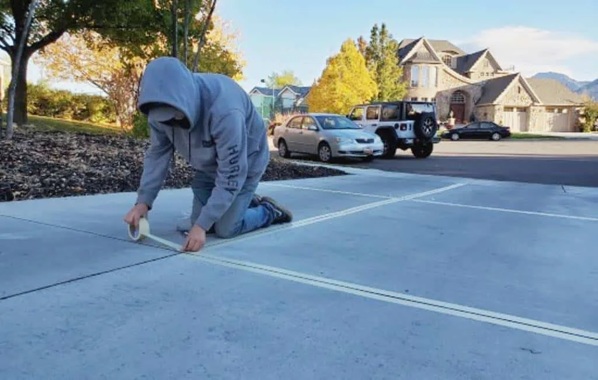
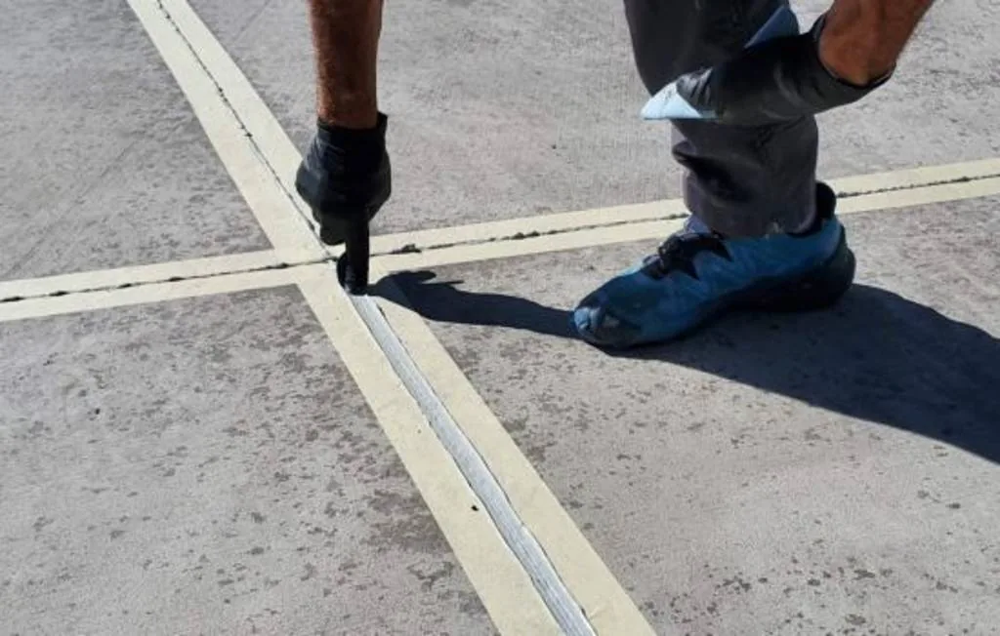

2. What Happens if You Don’t Seal Concrete?
3. What to Expect During a Driveway or Patio Concrete Seal
Share
Concrete is an extremely strong, durable, and versatile material that is used in construction all over the globe. It is no wonder that it is actually the most widely used man-made building material in the entire world. Nearly all homes have concrete poured for their foundations, driveways, and patios.
Concrete is made of cement (finely crushed rocks), water, and aggregates, which may be sand, limestone, or gravel. As the water dries, it creates a compressed mixture which essentially forms a brand-new rock. But, just like other rocks in nature, small particles will erode over time. This process may be sped up by various factors, such as the weather, foot traffic, weight load, and friction.
So, while this material is extremely tough and can withstand a lot of wear and tear, it is not indestructible by any means. When used for structures like patios and garages, it can wear down quite quickly under the weight of vehicles, heavy furniture, and people moving about.
So, does concrete need to be sealed to prevent this from happening? Here’s what you need to know if you have a concrete patio or driveway in your home.
Although concrete feels solid, there are many small holes and cracks in the surface. When moisture seeps in from the rain or melting snow, it can weaken the concrete or even cause mold to form. Since the material is naturally so porous, it can also stain. Things like oil, mud, rust, and liquids like coffee or wine can leave unsightly stains behind if they aren’t cleaned right away.
Concrete sealer is a material that dries to create a moisture-proof seal over the concrete. This helps prevent excess wear and tear and creates a barrier, preventing moisture and other liquids from absorbing into the concrete.
Sealing concrete is not a requirement, but most experts will recommend it depending on the placement and environment. Flat surfaces benefit the most from concrete sealant since it dries evenly and seeps into the small crevices.
Several types of sealers can be applied to patios and driveways, each of which offers specific benefits.
Acrylic Resin-Based Sealers
Acrylic resin is a type of plastic substance which dries into a hard material that creates an air-tight barrier over the concrete. This is one of the most common types of concrete sealers as it is the least expensive. However, acrylic resin-based sealers may develop a slightly yellowed tint in direct sunlight, especially if mixed with added products like silicone.
Epoxy/Polyurethane Sealers
While epoxy or polyurethane concrete sealers are more expensive than acrylic resin, it tends to be longer-lasting. This sealer creates a far thicker layer, which protects the concrete below quite effectively. However, if not poured correctly, it can lock in the remaining moisture from the concrete and create a hazy white layer. So, this type of sealer must be applied carefully to avoid this issue.
Penetrating Sealers
As the name implies, penetrating sealers are designed to soak into the concrete below the surface level. These sealers contain resins made from silicones, siloxanes, and silanes which bind to water and oil. This offers the deepest and longest-lasting protection.
Most sealers come in two different types of finishes:
- Solvent Sealers – High gloss and shiny finish
- Water-based Sealers – Semi-gloss and slightly matte finish
While adding any type of sealer to your concrete will protect it, one type may be better than another, depending on certain factors. For instance, penetrating sealers or ones containing silane are water-repellent. This is best for areas with lots of rainfall, snow, or near bodies of water. If you want to increase the strength of the concrete itself, then opt for a silicate sealer.
So, what happens if you don’t seal your concrete patio or driveway? Well, your concrete will probably look just fine for a few years. But over time, you will notice a lot of differences in the look, feel, and durability of the concrete.
First, the color of the concrete will likely change. It may fade in spots that get direct sunlight, while other areas will darken from mold, stains, and excess wear. Small cracks will start to form, which can grow if the concrete expands due to the weather. Concrete will contract in below-freezing temperatures and expand in the heat, so this change can create even more cracks.
Eventually, you will need to do concrete repairs or pour a new concrete layer on top. If your driveway is made from slabs, moisture soaking in can cause the slabs to shift and create an uneven surface. While you can correct this with polyurethane foam, it’s a whole lot easier just to prevent this problem in the first place.
Sealing your concrete helps to prolong the material, so it stays intact for many years. It also keeps the color looking bright and new and stops cracks from forming and growing.
3. What to Expect During a Driveway or Patio Concrete Seal
This is highly dependent on the climate of their home. When the ground freezes and then thaws, it can wreak havoc on concrete and cause issues. Since the Utah and Wyoming area temperatures change rather drastically through the seasons, sealing every year is a wise choice.
The concrete sealing process is pretty quick – but you should always leave it to the professionals to ensure it’s done right.
The first step will be to prep the driveway or patio to make sure the concrete is in good enough condition for a seal. Any cracks may need to be filled in, and any uneven slabs will need to be leveled back into place.
Next, the seams between any slabs and structures will be sealed off with tape. These will also be re-grouted for smooth seals between the seams. The sealer will then be applied in a thin layer using a sprayer for an even and smooth finish. The concrete will then be left to dry for at least 24 hours – then your driveway and patio will look as good as new!
If you’re looking to get your concrete driveway or patio sealed, contact Poly-Lift for a free estimate. We service homes throughout Cache, Sweetwater, Sublette, and Davis county Utah along with Sublette and Teton Counties in Wyoming.
We can help to resolve any issues with your concrete and prevent further damage through our concrete lifting, leveling, and sealing services. Learn more today by giving us a call at 435-999-9309!
How Much Does It Cost to Repair a Foundation?
When homeowners start to notice signs of foundation damage, acting quickly is essential. Even small cracks and signs ...
Insulating Concrete Block Walls with Core Foam Masonry Foam Insulation®
Concrete block walls are a popular choice for both commercial and residential construction projects due to their strength, ...
Why Do Foundations Sink? What You Need to Know About Sinking Foundation Repair
It sounds alarming, but it’s incredibly normal for any home to move a bit as it settles into ...
From our jobs



